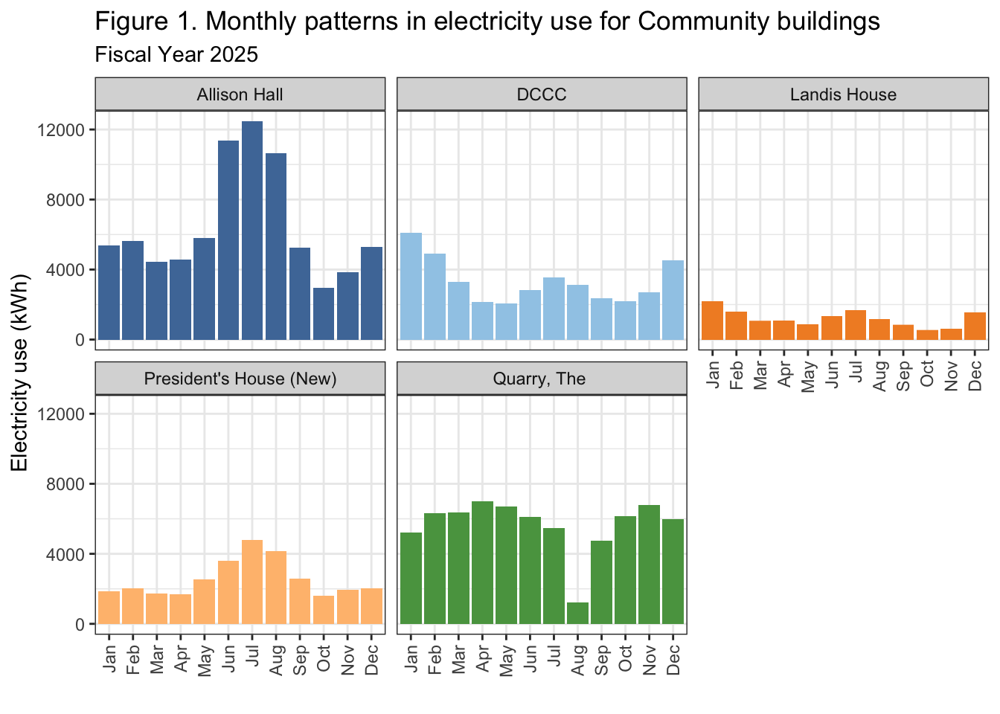
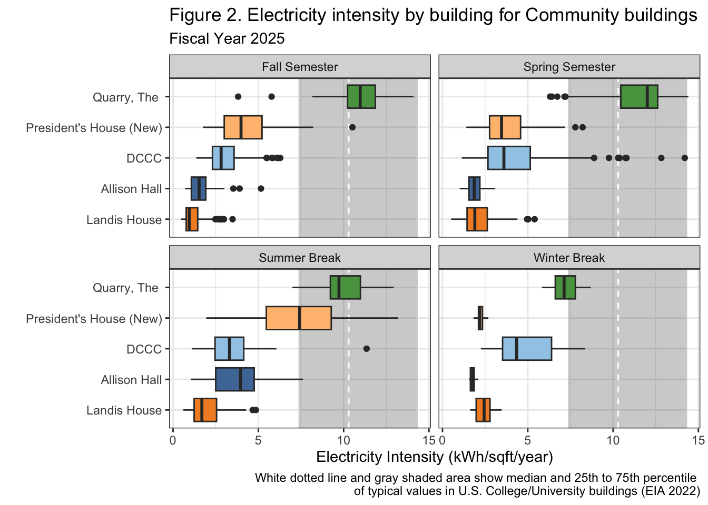

There are 10 buildings within the Community building group that are used for a wide variety of functions including private residences, dining services, daycare, social space, and healthcare. The Community category takes up a significant amount of space on Dickinson’s campus and includes larger buildings like the Holland Union Building (HUB) in addition to smaller buildings like Landis House that have a difference of about 100,000 square feet. In total, the Community buildings take up 254,226 square feet on the Dickinson campus (13% of the total).
There is wide variability in square footage within the community group alongside other features such as differences in age and cooling. Allison Hall is the only building in the community group that utilizes window units for cooling and is also among the oldest of the buildings in the group, constructed in 1958 with no renovations since then. The Quarry was built in 1899 but was renovated in 2000, about the same time the Kline Center Annex was built in 1998. The variety in usage, air conditioning, size, and age in the community group makes it particularly difficult to define the parameters that make up a “community” building, thus rendering some buildings incomparable to one another.
The electricity data for the Community Buildings group is not complete as there are four buildings on the main meter: The HUB, The Quarry, ATS, and the Kline Center Annex. The HUB and The Quarry also contain disaggregated meters that provide some data. Two buildings, The Asbell Center and the Historic President’s House are on the Weis Meter, and so they are also lacking data. Overall there were five buildings in this category that had usable electricity data for fiscal year 2025.
Allison Hall was the largest building with complete data in our group and had the highest kWh usage in fiscal year 2025, but also the second lowest electricity intensity (Table 1). Overall, electricity intensity in the Community group ranged between 1.8-10.7 kWh/sqft with a large jump between The President’s House (4.9 kWh/sqft) and The Quarry (10.7 kWh/sqft). Landis House, the third smallest building, had the least electricity intensity of the buildings while the Quarry, the second smallest building, had the highest electricity intensity.
According to the 2022 EIA report an average U.S. college or university building in 2018 had an electricity intensity of 12.6 kWh/sqft. The electricity intensity for all of the buildings in the Community group fell below this value in the fiscal year 2025.
Interestingly, the smallest buildings in our dataset did not have the lowest kWh usage since buildings such as the Quarry used more kWh than the DCCC which is larger by about 4000 square feet. This translates to CO2 emissions and electricity cost since despite being the second smallest building, the Quarry displayed CO2 emissions and price values similar to Allison Hall, our largest, most expensive, and highest emitting building. The Quarry used only ~2000 less kWh than Allison Hall. Landis House released the least CO2 and cost the least to power in the fiscal year 2025.
datatable(community_kwh_annual,
caption="Table 1. Total electricity use, estimated financial cost, and estimated greenhouse gas emissions of Community buildings during fiscal year 2025.",
colnames=c("Meter","Building","Days of Data (%)","Square Footage","kWh","kWh (corrected)","kWh per sqft","Cost ($)","CO2e (MT)"),
rownames=FALSE,
class="compact",
options = list(autoWidth = TRUE, dom = 't'))The largest change in results for the 2024/2025 academic year (Table 2) as opposed to the full fiscal year 2025 (Table 1) is the comparison between Allison Hall and The Quarry. Otherwise, the other buildings in the Community group experience some decreases in kWh, electricity intensity, price, and CO2 emissions, but otherwise remain in the same order as the fiscal year 2025 table when limited to the 2024/2025 academic year. Furthermore, every building in the Community group continued to have electricity intensity values below the average electricity intensity value for college and university buildings detailed by the 2022 EIA report (Table 2).
During the academic year the Quarry surpassed Allison Hall in total kWh usage by over 10,000 kWh and was correspondingly more expensive to power and a larger emitter of CO2 emissions. The Quarry also remained the most electricity intensive building.
The President’s House (New) can be described as having just under double the kWh usage, electricity intensity, cost, and CO2 emissions of Landis House during the academic year. However, this would be an unfair comparison considering that The President’s House (New) is a building used for full-time residence by the Dickinson President and his wife whereas Landis House is not always occupied and certainly not a residential space.
datatable(community_kwh_academicYr,
caption="Table 2. Total electricity use, estimated financial cost, and estimated greenhouse gas emissions of Community buildings during academic year 2024/2025.",
colnames=c("Meter","Building","Days of Data (%)","Square Footage","kWh","kWh (corrected)","kWh per sqft","Cost ($)","CO2e(MT)"),
rownames=FALSE,
class="compact",
options = list(autoWidth = TRUE, dom = 't'))When looking at patterns in Community buildings for electricity use by month (Figure 1), we can see that four of our five buildings (all except the Quarry), show a similar pattern of electricity use at similar points in the year, though at greatly different magnitudes. Allison Hall, DCCC, Landis House, and the New President’s House tend to show peak kWh expenditure during the height of the winter and summer months, with slight dips in the fall and spring months. Allison tends to show the highest electricity usage of all the buildings, with the summer showing greater peaks than winter (just over ~12,000 kWh in July). Similarly, the President’s New House shows the highest electricity use in the summer months compared to winter, though with much lower overall kWh usage (~5,000 kWh in July). Landis House and DCCC, on the other hand, tend to have slightly higher kWh totals in the winter months than the summer months. DCCC and Landis House have the highest electricity use in the month of January. The dip in the Quarry in August is likely related to the submeter for that building going offline during that period.
#create bar plot
ggplot(comm_dailyfix, aes(x = month, y = kwh, fill=NAME)) +
geom_bar(stat = "identity") +
facet_wrap(.~NAME)+
scale_fill_paletteer_d("ggthemes::Tableau_20")+
theme_bw()+
theme(legend.position = "none")+
theme(axis.text.x = element_text(angle = 90, vjust = 0.5, hjust = 1))+
labs(x="",
y="Electricity use (kWh)",
title = "Figure 1. Monthly patterns in electricity use for Community buildings",
subtitle = "Fiscal Year 2025")
Of all the Community buildings, the Quarry shows the highest electricity usage when normalized by square footage per year (kWh/sqft/year) for all four periods (Figure 2). The Quarry shows the highest electricity usage for Spring and Fall semesters, with a slightly lower median over Summer break and even lower median over Winter break. The electricity usage values for the Spring and Fall semesters for the Quarry fall just above the EIA’s reported median electricity usage for College and University Buildings, while Summer and Winter Break fall below.
Further, Landis House shows the lowest electricity usage per square foot per year in comparison to all other buildings for Fall semester, Spring semester, and Summer Break, but not for Winter Break. Landis House has incredibly consistent kWh usage across all periods, with a median never rising above ~2.5 kWh/sqft/year. Allsion Hall and the President’s New House fall well above Landis House for all points of the year except for Winter Break, where both buildings dip in electricity usage. DCCC shows relatively consistent electricity usage throughout all periods.
#create boxplot
ggplot(comm_dailyfix, aes(x = reorder(NAME, kwh_sqft_yr), y = kwh_sqft_yr, fill = NAME))+
annotate("rect", xmin = -Inf, xmax = Inf, ymin = 7.4, ymax = 14.3, color = "lightgray", alpha = 0.3) +
geom_hline(yintercept = 10.3, linetype = "dashed", color = "white") +
geom_boxplot()+
coord_flip()+
facet_wrap(.~period)+
theme_bw()+
theme(legend.position = "none")+
scale_fill_paletteer_d("ggthemes::Tableau_20")+
labs(x = "",
y = "Electricity Intensity (kWh/sqft/year)",
title = "Figure 2. Electricity intensity by building for Community buildings",
subtitle = "Fiscal Year 2025",
caption = "White dotted line and gray shaded area show median and 25th to 75th percentile \nof typical values in U.S. College/University buildings (EIA 2022)")
For the most part, the results for electricity usage and electricity intensity in Community buildings make sense considering what we know about these buildings specific uses and heating/cooling infrastructure. Looking at Landis House, for example, we expect there to be rather consistent and low usage throughout the year due to the fact this building is an office space. People likely occupy this building only over regular working hours, between 8/9 am, to about 5/6 pm, over a relatively consistent schedule. As expected for this building, our results do in fact show rather consistent and low usage across monthly usage and kWh/sqft/year. Similarly for DCCC, the child care center, given the building’s heating and cooling system with heat pumps that run on electricity, we expect to see high electricity usage in the winter as well as hotter months. Again, our results tend to align with these expectations.
However, our results for Allison Hall, the President’s New House, and the Quarry tend to vary considerably from our expectations and other buildings. The variation in the President’s New House compared to other buildings in this category begins to make more sense when factoring in this building’s use as a residential space. We recommend moving this particular building to another category, perhaps small residential spaces, rather than community so that the results may be more comparable. For the Quarry, this building’s high usage may be explained by this building’s near-frequent use throughout the Fall and Spring semesters while students are on campus and in need of caffeine. Additionally, when considering the amount of equipment needed to run a coffee shop, equipment likely all running on electricity, the higher totals for this building begin to make more sense. Either way, although explainable, looking into the electricity usage and intensity of this building may be helpful to examine further considering that intensity does fall above the EIA’s reported median for College and University Buildings in the spring semester. Finally, for Allison Hall, the variation can be explained in part by the need for dehumidifying and air conditioning in the summer to prevent mold (pers. comm., Mike Kiner, spring 2026). Although few people use this space in summer (pers. comm, Mike Kiner, spring 2026), electricity use is high to keep the structure standing. Further, we see a slight peak in electricity usage in the winter, which may be due to the need for ventilation to pump heat around the building. We highly recommend further investigation the patterns of usage in this space.
Overall, while our results tend to make sense considering what we know about each individual building, we do have some recommendations to improve our analysis moving forward. First and foremost, we believe that the President’s New House and Landis House should be moved into a different building category that more closely aligns with the specific functions of those buildings. The President’s House would likely fit in well with Small Residential Spaces, and the Landis House with Administrative spaces. Moving these buildings to these categories may make it easier to reasonably compare results. Finally, we believe Allison Hall and the Quarry do fit in the community category, but we recommend further investigating these particular buildings considering how their high electricity usage.
Energy Information Administration (EIA). (2022). 2018 Commercial Buildings Energy Consumption Survey (CBECS). https://www.eia.gov/consumption/commercial/
Leary, N. (2025). Dickinson College Greenhouse Gas Inventory 2008-2023. Center for Sustainability Education.
Dinela Dedic wrangled the annual and academic year data in addition to creating the two data tables. They also wrote the background section of the report and the results for the tables. Emma Keane wrangled the daily data, created Figures 1 & 2, and wrote the results for the figures and the recommendations. Both partners contributed to revisions.
No AI was used in writing code, notes, or recommendations.
sessionInfo()R version 4.6.0 (2026-04-24)
Platform: x86_64-apple-darwin20
Running under: macOS Ventura 13.7.8
Matrix products: default
BLAS: /Library/Frameworks/R.framework/Versions/4.6-x86_64/Resources/lib/libRblas.0.dylib
LAPACK: /Library/Frameworks/R.framework/Versions/4.6-x86_64/Resources/lib/libRlapack.dylib; LAPACK version 3.12.1
locale:
[1] en_US.UTF-8/en_US.UTF-8/en_US.UTF-8/C/en_US.UTF-8/en_US.UTF-8
time zone: America/New_York
tzcode source: internal
attached base packages:
[1] stats graphics grDevices utils datasets methods base
other attached packages:
[1] paletteer_1.7.0 DT_0.34.0 lubridate_1.9.5 forcats_1.0.1
[5] stringr_1.6.0 dplyr_1.2.1 purrr_1.2.2 readr_2.2.0
[9] tidyr_1.3.2 tibble_3.3.1 ggplot2_4.0.3 tidyverse_2.0.0
[13] workflowr_1.7.2
loaded via a namespace (and not attached):
[1] sass_0.4.10 generics_0.1.4 prismatic_1.1.2 stringi_1.8.7
[5] hms_1.1.4 digest_0.6.39 magrittr_2.0.5 timechange_0.4.0
[9] evaluate_1.0.5 grid_4.6.0 RColorBrewer_1.1-3 fastmap_1.2.0
[13] rprojroot_2.1.1 jsonlite_2.0.0 processx_3.9.0 whisker_0.4.1
[17] rematch2_2.1.2 promises_1.5.0 httr_1.4.8 crosstalk_1.2.2
[21] scales_1.4.0 jquerylib_0.1.4 cli_3.6.6 rlang_1.2.0
[25] withr_3.0.3 cachem_1.1.0 yaml_2.3.12 otel_0.2.0
[29] tools_4.6.0 tzdb_0.5.0 httpuv_1.6.17 vctrs_0.7.3
[33] R6_2.6.1 lifecycle_1.0.5 git2r_0.36.2 htmlwidgets_1.6.4
[37] fs_2.1.0 pkgconfig_2.0.3 callr_3.7.6 pillar_1.11.1
[41] bslib_0.11.0 later_1.4.8 gtable_0.3.6 glue_1.8.1
[45] Rcpp_1.1.1-1.1 xfun_0.59 tidyselect_1.2.1 rstudioapi_0.19.0
[49] knitr_1.51 farver_2.1.2 htmltools_0.5.9 labeling_0.4.3
[53] rmarkdown_2.31 compiler_4.6.0 getPass_0.2-4 S7_0.2.2